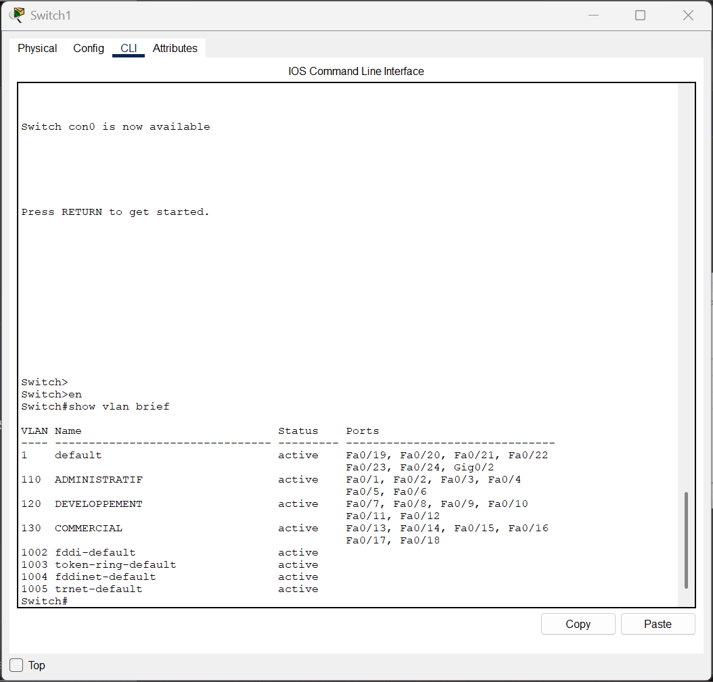

Milieu professionnel — 2ème année
Configuration VLAN — Linkt
Contexte
Configuration et vérification des VLANs sur un routeur Cisco C1117 — 3 VLANs à séparer pour un client Linkt
Période
Janvier–Février 2026 — Stage 2ème année BTS SIO SISR
Compétences
Gérer le patrimoine informatique — Répondre aux incidents
Contexte général
Durant mon stage chez Linkt, j'ai configuré et vérifié les VLANs sur un routeur Cisco C1117. Le client avait 3 VLANs à séparer : VLAN1 (réseau par défaut), VLAN2 (port Gi0/1/0), VLAN3 (port Gi0/1/1). Mission : vérifier, documenter et finaliser la configuration VLAN pour assurer la séparation des flux réseau.
Section 1 — Vérification des VLANs existants
Audit initial
show vlan brief
VLAN1 → Gi0/1/2-3 |
VLAN2 → Gi0/1/0 |
VLAN3 → Gi0/1/1

Fig. 1 — Résultat show vlan brief — état initial des VLANs sur le routeur Cisco C1117
Section 2 — Création et nommage des VLANs
Nommage
configure terminal vlan 2 name CLIENTS_VLAN2 exit vlan 3 name CLIENTS_VLAN3 exit
Section 3 — Assignation des ports aux VLANs
Mode access
! VLAN 2 — port Gi0/1/0 interface GigabitEthernet0/1/0 switchport mode access switchport access vlan 2 no shutdown exit ! VLAN 3 — port Gi0/1/1 interface GigabitEthernet0/1/1 switchport mode access switchport access vlan 3 no shutdown exit ! VLAN 1 — ports Gi0/1/2-3 interface range GigabitEthernet0/1/2-3 switchport mode access switchport access vlan 1 no shutdown exit
Section 4 — Configuration des interfaces SVI (passerelles)
Routage inter-VLAN
interface Vlan1 ip address 192.168.21.254 255.255.255.0 no shutdown exit interface Vlan2 ip address 10.31.59.254 255.255.255.0 no shutdown exit interface Vlan3 ip address 10.29.65.254 255.255.255.0 no shutdown exit
Section 5 — Vérification finale
Contrôle
show ip interface brief
Vlan1 192.168.21.254 — up/up ✅ |
Vlan2 10.31.59.254 — up/up ✅ |
Vlan3 10.29.65.254 — up/up ✅
show interfaces status write memory
Section 6 — Synthèse
| Action | Commande clé | Rôle |
|---|---|---|
| Créer un VLAN | vlan 2 | Définir un segment de niveau 2 |
| Assigner un port | switchport access vlan 2 | Isoler le trafic client |
| Activer routage inter-VLAN | interface Vlan2 + ip address | Donner une passerelle au VLAN |
- ✅ 3 VLANs opérationnels
- ✅ Ports correctement affectés
- ✅ Routage inter-VLAN fonctionnel
Outils utilisés
Routeur Cisco C1117
Équipement réseau client — configuration des VLANs via CLI IOS
SecureCRT
Client SSH/Telnet pour la prise en main à distance des équipements réseau
Linkticket
Outil de ticketing interne — suivi de l'intervention et compte rendu client
Compétences mobilisées
Gérer le patrimoine informatique
Répondre aux incidents et demandes d'assistance
Configuration et segmentation VLAN
Administration CLI IOS sur routeur Cisco
Routage inter-VLAN via interfaces SVI
Vérification et documentation de la configuration